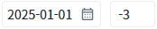

'WebSquare.date.dateAdd' 메소드를 사용하여 'yyyyMMdd' 형식의 날짜에 일 수를 더하거나 빼는 예제입니다.
'yyyyMMdd' 형식의 날짜에 일 수를 더하거나 빼기
InputCalendar에 입력된 날짜 형식의 문자열에 Input에 입력된 값을 일 수로 더하여 결과를 출력하는 예제입니다. Input에는 양수와 음수를 입력할 수 있습니다.
1
STEP 1: 초기 상태를 확인합니다.
InputCalendar에 '20250101'이 기본 값으로 설정되어 있고 Input에는 '-3'이 기본 값으로 설정된 상태입니다.
Image 1.브라우저(Chrome) 실행 예시

2
STEP 2: 'AddDate' 버튼을 클릭합니다.
3
STEP 3: 실행 결과를 확인합니다.
2025년 1월 1일에 3일을 뺀 날짜가 반환됩니다.
예제 영역 '로그 확인'의 textarea 또는 브라우저 개발자 도구의 콘솔에 출력된 로그를 확인합니다.
Example 1.Log
[06:03:48] Date: 20250101, Offset: -3, Result: 20241229
4
STEP 4: Input의 입력 값을 '3'으로 변경하고 'AddDate' 버튼을 클릭합니다.
5
STEP 5: 실행 결과를 확인합니다.
2025년 1월 1일에 3일을 더한 날짜가 반환됩니다.
Example 2.Log
[06:08:01] Date: 20250101, Offset: 3, Result: 20250104
6
STEP 6: InputCalendar에 날짜를 변경하거나 Input의 숫자를 변경하여 테스트합니다.
InputCalendar에는 날짜 문자열을 'yyyyMMdd' 형식으로 입력하고, Input에는 음수 또는 양수를 입력합니다.
WebSquare.date.dateAdd 메소드를 사용하여 스크립트를 작성합니다.
Example 3.Script
// 예제 파일에서는 스크립트 scwin.btn_addDate_onclick에 작성되어 있습니다. // 2025년 1월 1일에 3일을 더한 날짜를 문자열로 반환받습니다. var result1 = WebSquare.date.dateAdd("20250101", 3); // 2025년 1월 1일에 3일을 뺀 날짜를 문자열로 반환받습니다. var result2 = WebSquare.date.dateAdd("20250101", -3);
WebSquare.date.dateAdd